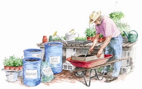

ELAYNE SEARS
To make you own potting soil for seedlings and houseplants, first screen some compost, then pasteurize it by heating in an oven or a solar cooker. Then blend this prepared compost with garden soil.